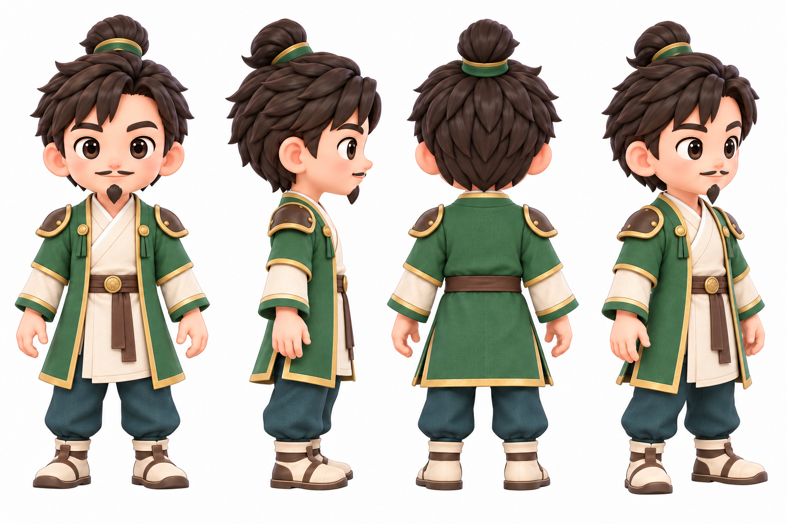
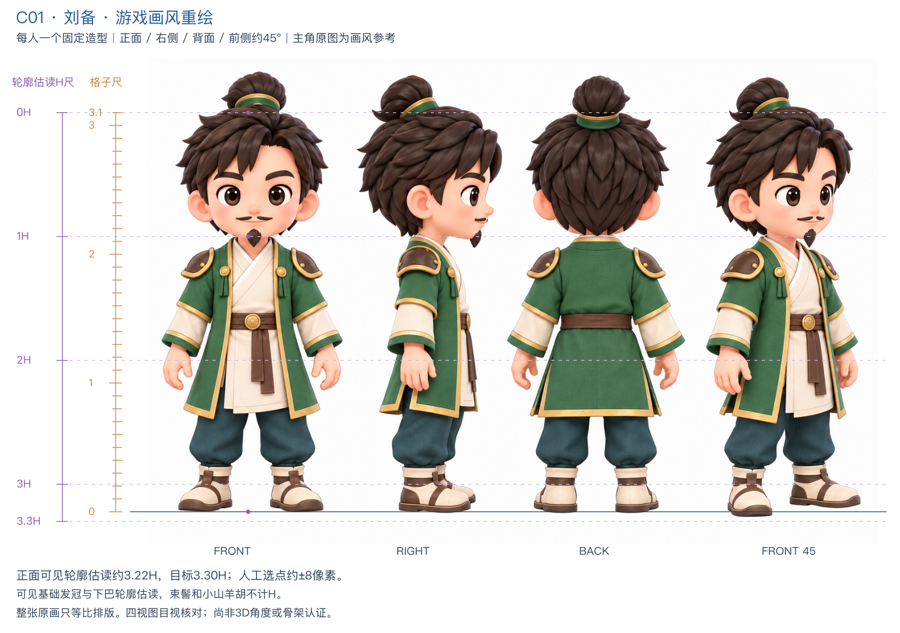
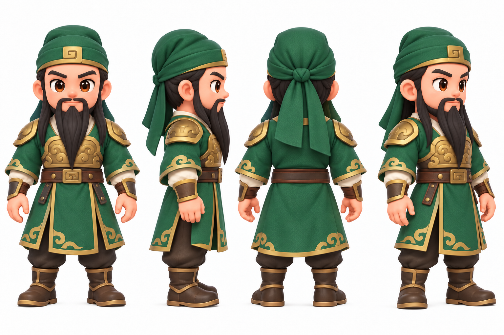
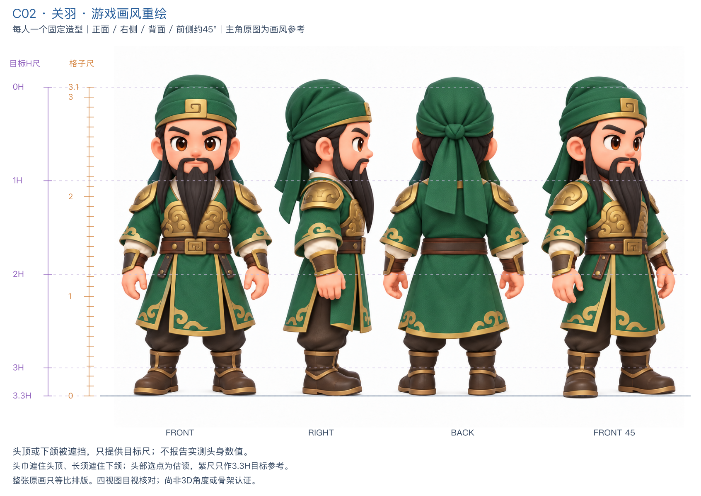
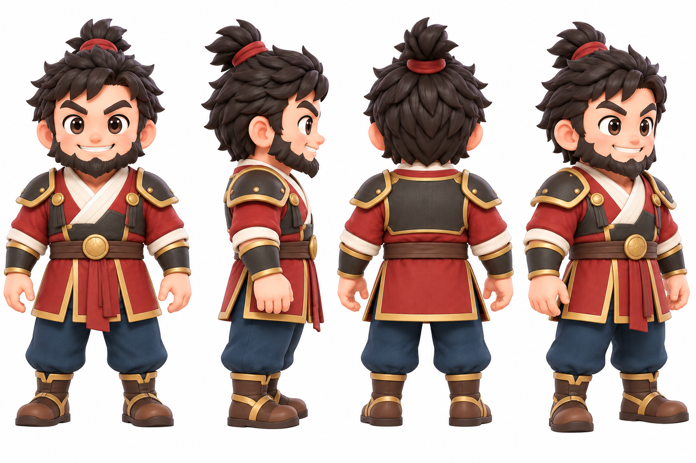
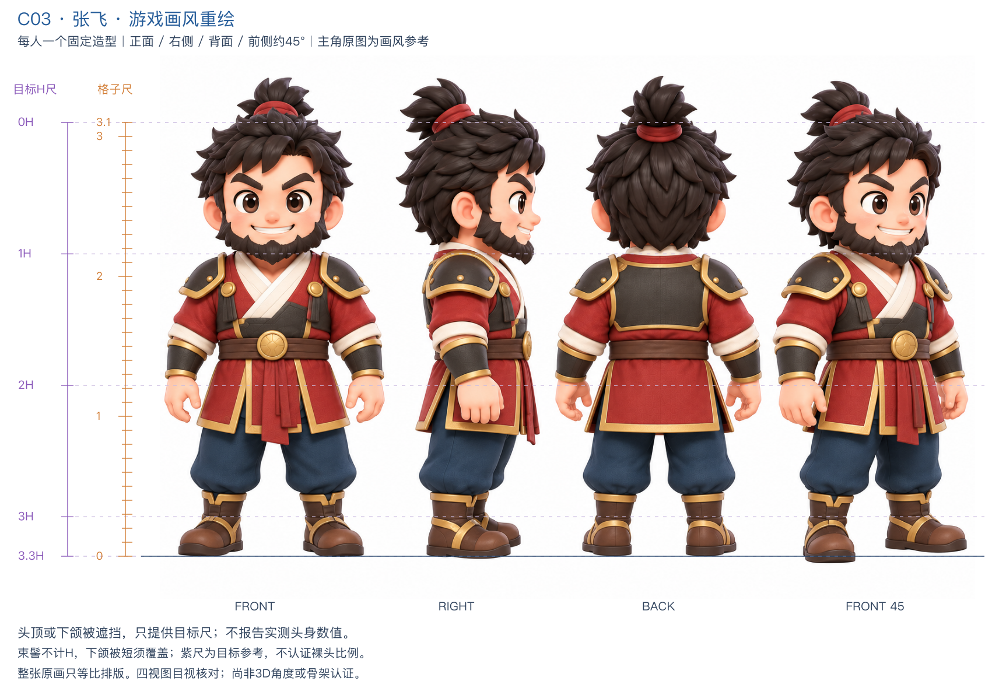
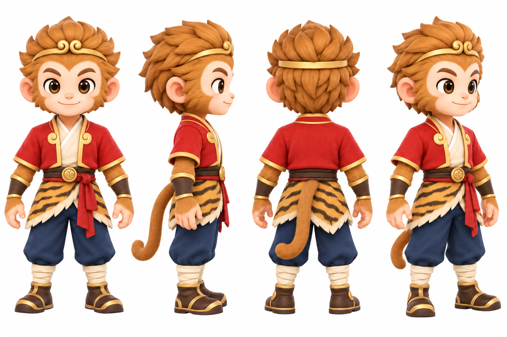
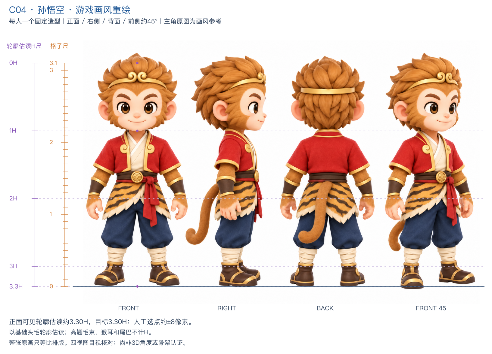

C01 · 刘备重绘候选·待用户选型 · 均衡·文武兼备原画大图 · 左侧标尺检查 · 唯一造型定义与提示词温和圆脸、棕色大眼睛，黑色低束髻与细短髭。玉绿色及膝外袍配象牙白交领内衣，简洁小肩甲、棕色腰带、青灰宽松长裤和浅棕短靴；均衡体型。比例检查与标尺可见基础发冠与下巴轮廓估读，束髻和小山羊胡不计H。可见轮廓估读约3.22H；目标3.30H。
C02 · 关羽重绘候选·待用户选型 · 健壮·宽肩稳重原画大图 · 左侧标尺检查 · 唯一造型定义与提示词沉稳的圆眼和枣红脸，绿色低头巾、黑色长须。深绿战袍配简化金色胸甲与护腕，棕色腰带和短战靴；肩部略宽，保持主角的紧凑四肢。比例检查与标尺头巾遮住头顶、长须遮住下颌；头部选点为估读，紫尺只作3.3H目标参考。头部遮挡，不报告实测值。
C03 · 张飞重绘候选·待用户选型 · 健壮·厚壮躯干原画大图 · 左侧标尺检查 · 唯一造型定义与提示词黑色蓬松短发与红发带，浓眉、大圆眼、爽朗笑容和短络腮胡。赤红短战袍配深灰小肩甲，藏蓝裤、棕金短靴；宽肩厚实，腿部不过度加粗。比例检查与标尺束髻不计H，下颌被短须覆盖；紫尺为目标参考，不认证裸头比例。头部遮挡，不报告实测值。
C04 · 孙悟空重绘候选·待用户选型 · 纤细·灵巧猴形原画大图 · 左侧标尺检查 · 唯一造型定义与提示词金色块状头毛、圆猴耳、奶油色面部和棕金大眼，低金箍。红金短外套、象牙白内衣、腰部小块虎皮、藏蓝裤与绑腿短靴；灵巧体型，细尾巴。比例检查与标尺以基础头毛轮廓估读；高翘毛束、猴耳和尾巴不计H。可见轮廓估读约3.30H；目标3.30H。